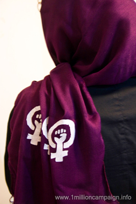
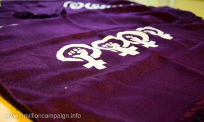

|
|
|
Browsing
Contact Us |
Campaigners |
Face to Face |
Tribune |
Interview |
News |
On the Web |
One Million |
Report
Farsi | Français | German | Italian | Spanish | العربية Also in this section
|
 Another Symbol for ObjectionTranslated by: Roja Bandari Thursday 17 June 2010 Change for Equality: In their nearly four years of activism, the activists of the One Million Signatures Campaign have regularly attempted to use different methods to make their message of equality heard by the public. This time on the occasion of June 12th, the day of Solidarity of Iran’s Women’s Rights Movements, a group of activists of the One Million Signatures Campaign made use of purple and white scarves in a novel effort to distribute their message of equality. By printing a design on the scarves, they have turned them into symbols of objection and protest.
 The issue of dress code and hejab has a long history in Iran. Just in the past hundred years one can see different attitudes toward this issue. During the Qajar years, women appeared in public wearing chador and face veil, such that they were indistinguishable from one another. During Reza Shah, with the passing of the forced unveiling law, all of a sudden women who were covered in the veil were forced to take off their hejab in public spaces and the western dress code became the ideal dress for men and women. During Mohammad Reza Shah, and especially in metropolitan areas, women had relatively more freedom in choosing their dress but after the 1979 revolution, this choice was taken away once again and women were this time forced to wear hejab in public spaces. This forced covering has varieties depending on the location, geographical conditions of different cities, and the culture and convention of each location. Nevertheless, the law pertaining to women’s dress in all parts of Iran currently states that the whole body as well as the hair must be covered in public spaces. The common element among all of these laws is the patriarchal view that makes decisions about women’s dress and hejab and passes laws about it. Women are deprived of one of their most basic rights and have not been able to choose their dress according to their personal choice. The scarf is one of the most common pieces of clothing worn by women in Iran; therefore a group of activists of the One Million Signatures Campaign have decided to turn the scarf into a sign of objection to legal discrimination against women. Since women and girls wear the scarf as hejab around the city, this piece of clothing is visible in public spaces; thus the activists have printed designs on purple and white scarves and used it to demonstrate their presence and to make their voices heard by the public. This action is not just an opposition to discrimination, but also an objection to all the restrictions in recent years and attempts to make women invisible in the public space through homogenizing of women’s code of conduct and appearance. |